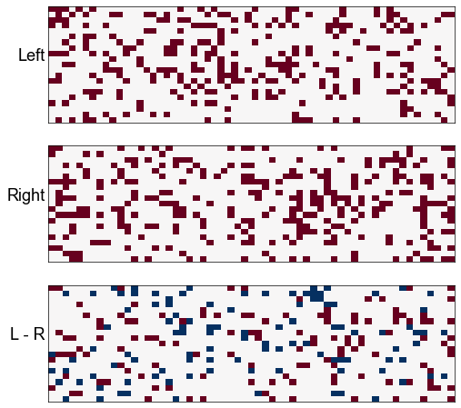
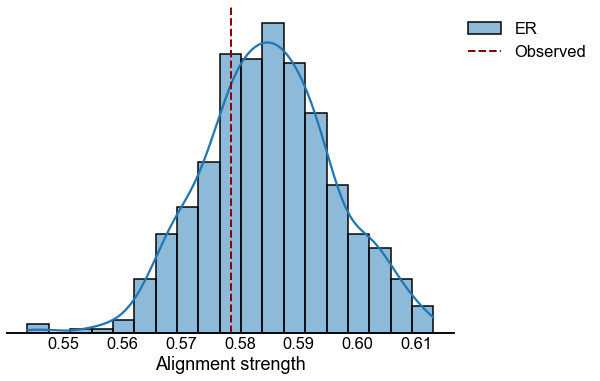

Left/Right stereotypy in Kenyon cells
Left/Right stereotypy in Kenyon cells¶
import datetime
import time
import matplotlib.pyplot as plt
import numpy as np
import pandas as pd
from giskard.plot import histplot, matrixplot
from graspologic.match import GraphMatch
from graspologic.plot import heatmap
from graspologic.utils import binarize
from pkg.data import load_maggot_graph, load_unmatched
from pkg.io import glue as default_glue
from pkg.io import savefig
from pkg.plot import set_theme
from tqdm import tqdm
DISPLAY_FIGS = True
FILENAME = "kc_stereotypy"
def gluefig(name, fig, **kwargs):
savefig(name, foldername=FILENAME, **kwargs)
glue(name, fig, figure=True)
if not DISPLAY_FIGS:
plt.close()
def glue(name, var, **kwargs):
default_glue(name, var, FILENAME, **kwargs)
t0 = time.time()
set_theme()
left_adj, left_nodes = load_unmatched("left")
right_adj, right_nodes = load_unmatched("right")
mg = load_maggot_graph()
left_mg = mg.node_subgraph(mg[mg.nodes["left"]].nodes.index)
right_mg = mg.node_subgraph(mg[mg.nodes["right"]].nodes.index)
nodes = left_mg.nodes
upns_left = nodes[nodes["merge_class"] == "uPN"].index
kcs_left = nodes[(nodes["class1"] == "KC") & (nodes["merge_class"] != "KC-1claw")].index
nodes = right_mg.nodes
upns_right = nodes[nodes["merge_class"] == "uPN"].index
kcs_right = nodes[
(nodes["class1"] == "KC") & (nodes["merge_class"] != "KC-1claw")
].index
n_upns = len(upns_left)
def remove_unconnected_kcs(adj, index, n_upns):
n_inputs = adj.sum(axis=0)
keep_mask = ~((n_inputs == 0) & (np.arange(len(n_inputs)) >= n_upns))
adj = adj[keep_mask][:, keep_mask]
index = index[keep_mask]
return adj, index
left_index = np.concatenate((upns_left, kcs_left))
left_mg.nodes = left_mg.nodes.reindex(left_index)
left_subgraph_mg = left_mg.node_subgraph(upns_left, kcs_left)
left_adj = binarize(left_subgraph_mg.sum.adj)
left_adj, left_index = remove_unconnected_kcs(left_adj, left_index, n_upns)
left_labels = np.array(n_upns * ["uPN"] + (len(left_adj) - n_upns) * ["KC"])
right_index = np.concatenate((upns_right, kcs_right))
right_mg.nodes = right_mg.nodes.reindex(right_index)
right_subgraph_mg = right_mg.node_subgraph(upns_right, kcs_right)
right_adj = binarize(right_subgraph_mg.sum.adj)
right_adj, right_index = remove_unconnected_kcs(right_adj, right_index, n_upns)
right_labels = np.array(n_upns * ["uPN"] + (len(right_adj) - n_upns) * ["KC"])
fig, axs = plt.subplots(1, 2, figsize=(10, 5))
heatmap(
left_adj,
cbar=False,
inner_hier_labels=left_labels,
title="Left hemisphere",
hier_label_fontsize=20,
font_scale=1.5,
ax=axs[0],
)
heatmap(
right_adj,
cbar=False,
inner_hier_labels=right_labels,
title="Right hemisphere",
hier_label_fontsize=20,
font_scale=1.5,
ax=axs[1],
)
<AxesSubplot:title={'center':'Right hemisphere'}>
print("Number of uPNs (L vs. R):")
print((left_labels == "uPN").sum())
print("vs")
print((right_labels == "uPN").sum())
print()
print("Number of KCss (L vs. R):")
print((left_labels == "KC").sum())
print("vs")
print((right_labels == "KC").sum())
Number of uPNs (L vs. R):
21
vs
21
Number of KCss (L vs. R):
60
vs
59
A = right_adj
B = left_adj
n_upns = len(upns_left)
gm = GraphMatch(n_init=25)
gm.fit(A, B, seeds_A=np.arange(n_upns), seeds_B=np.arange(n_upns))
perm_inds = gm.perm_inds_[: len(A)]
B_perm = B[perm_inds][:, perm_inds]
diff = A - B_perm
fig, axs = plt.subplots(3, 1, figsize=(8, 8))
matrixplot(B[:n_upns, n_upns:], cbar=False, ax=axs[0])
matrixplot(A[:n_upns, n_upns:], cbar=False, ax=axs[1])
matrixplot(diff[:n_upns, n_upns:], cbar=False, ax=axs[2])
# axs[0].set_title("KCs (graph matched)")
axs[0].set_ylabel("Left", rotation=0, ha="right")
axs[1].set_ylabel("Right", rotation=0, ha="right")
axs[2].set_ylabel("L - R", rotation=0, ha="right")
fig.set_facecolor("w")

def compute_density(adjacency, loops=False):
if not loops:
triu_inds = np.triu_indices_from(adjacency, k=1)
tril_inds = np.tril_indices_from(adjacency, k=-1)
n_edges = np.count_nonzero(adjacency[triu_inds]) + np.count_nonzero(
adjacency[tril_inds]
)
else:
n_edges = np.count_nonzero(adjacency)
n_nodes = adjacency.shape[0]
n_possible = n_nodes**2
if not loops:
n_possible -= n_nodes
return n_edges / n_possible
def compute_alignment_strength(A, B, perm=None):
n = A.shape[0]
if perm is not None:
B_perm = B[perm][:, perm]
else:
B_perm = B
n_disagreements = np.count_nonzero(A - B_perm) # TODO this assumes loopless
p_disagreements = n_disagreements / (n**2 - n)
densityA = compute_density(A)
densityB = compute_density(B)
denominator = densityA * (1 - densityB) + densityB * (1 - densityA)
alignment_strength = 1 - p_disagreements / denominator
return alignment_strength
def obj_func(A, B, perm):
PBPT = B[perm[: len(A)]][:, perm[: len(A)]]
return np.linalg.norm(A - PBPT, ord="fro") ** 2, PBPT
n_init = 25
rows = []
gm = GraphMatch(n_init=n_init)
gm.fit(A, B, seeds_A=np.arange(n_upns), seeds_B=np.arange(n_upns))
perm_inds = gm.perm_inds_
score, B_perm = obj_func(A, B, perm_inds)
alignment = compute_alignment_strength(A, B_perm)
rows.append({"data": "Observed", "score": score, "alignment": alignment})
def get_subgraph(A):
return A[:n_upns, n_upns:]
def make_subgraph(A):
A = A.copy()
# all KC to upn
A[n_upns:] = 0
# all PN to PN
A[:n_upns, :n_upns] = 0
return A
def er_subgraph(size, p, rng=None):
subgraph = rng.binomial(1, p, size=size)
n = size[0] + size[1]
A = np.zeros((n, n))
A[:n_upns, n_upns:] = subgraph
return A
A_sub_adj = get_subgraph(A)
B_sub_adj = get_subgraph(B)
p_A = np.count_nonzero(A_sub_adj) / A_sub_adj.size
p_B = np.count_nonzero(B_sub_adj) / B_sub_adj.size
n = A_sub_adj.shape[1]
rng = np.random.default_rng(8888)
n_sims = 1000
for sim in tqdm(range(n_sims)):
A_sim = er_subgraph(A_sub_adj.shape, p_A, rng)
B_sim = er_subgraph(A_sub_adj.shape, p_B, rng)
gm = GraphMatch(n_init=n_init)
gm.fit(A_sim, B_sim, seeds_A=np.arange(n_upns), seeds_B=np.arange(n_upns))
perm_inds = gm.perm_inds_
score, B_sim_perm = obj_func(A_sim, B_sim, perm_inds)
alignment = compute_alignment_strength(A_sim, B_sim_perm)
rows.append({"data": "ER", "score": score, "alignment": alignment})
results = pd.DataFrame(rows)
100%|██████████████████████████████████████████████████████████████████████████████████████████████████████████████████████████████████████| 1000/1000 [00:33<00:00, 30.13it/s]
observed_alignment = results[results["data"] == "Observed"].iloc[0]["alignment"]
prop_less_than = (
results[results["data"] == "ER"]["alignment"].values < observed_alignment
).mean()
fig, ax = plt.subplots(1, 1, figsize=(8, 6))
histplot(data=results, x="alignment", hue="data", kde=True, ax=ax)
ax.set(ylabel="", yticks=[], xlabel="Alignment strength")
ax.spines["left"].set_visible(False)
gluefig("alignment_dist", fig)

elapsed = time.time() - t0
delta = datetime.timedelta(seconds=elapsed)
print(f"Script took {delta}")
print(f"Completed at {datetime.datetime.now()}")
Script took 0:00:42.412426
Completed at 2022-04-29 09:52:23.034504